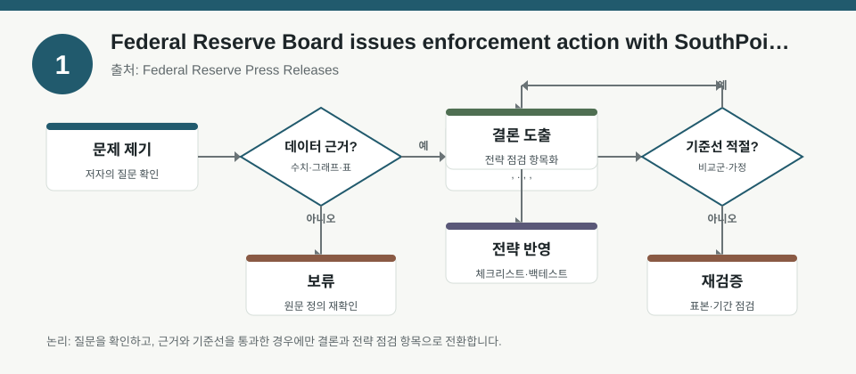
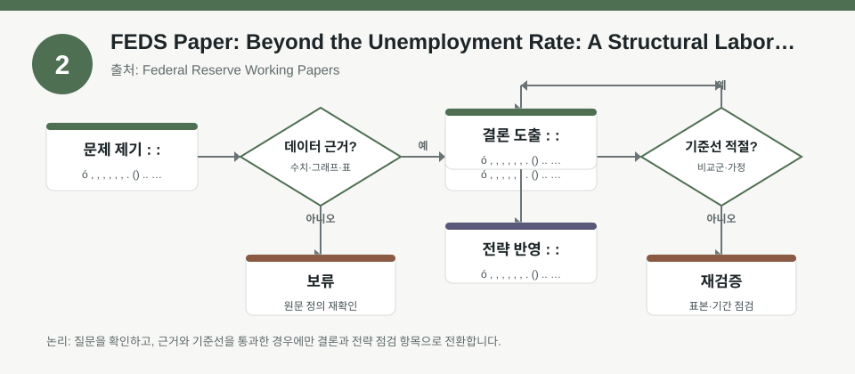
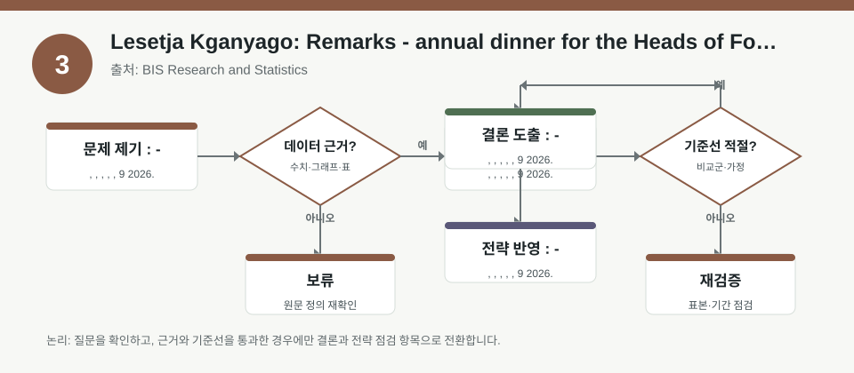

핵심 요약
- 결론: 이번 자료 묶음은 미국 금융감독 이슈, 노동시장 신호의 해석 개선, 남아공 중앙은행 발언을 통해 금리·환율·리스크 프레임을 재점검하는 데 도움이 됩니다.
- 원칙: 수치가 원문 메타데이터에 없으면 사실로 단정하지 말고, 한국 투자자는 KOSPI/KOSDAQ 업종 노출·FX 민감도·금리·인플레이션·변동성·규제 리스크 점검 항목으로 검증해야 합니다.
주목할 자료
| 번호 | 자료 | 출처 | 원문 | 핵심 내용 | 데이터 포인트 | 리스크/한계 |
|---|---|---|---|---|---|---|
| 1 | Federal Reserve Board issues enforcement action with SouthPoint Bancshares, Inc. and announces termination of enforcement action with Deutsche Bank AG, DB USA Corporation, and Deutsche Bank AG New York Branch | Federal Reserve Press Releases | 원문 보기 | 미국 은행권 감독·제재·종결 이슈를 함께 다뤄 규제 환경 변화를 보여줍니다. | 규제 강화/완화가 은행주·신용스프레드·달러 유동성 기대에 미칠 영향 확인 | 개별 기관 대상 조치이므로 한국 시장 전체로 일반화하면 안 되며, 세부 제재 사유와 범위를 원문에서 확인해야 합니다. |
| 2 | Beyond the Unemployment Rate: A Structural Labor Market Indicator | Federal Reserve Working Papers | 원문 보기 | 실업률 외 노동시장 변수들을 통합해 경기 과열·완화 신호를 더 구조적으로 해석하려는 연구입니다. | 팩터 해석 시 고용 둔화/임금 압력/정책 경로가 가치·성장·소형주 스타일에 주는 영향 점검 | 구조적 지표는 추정모형 의존도가 높아, 표본·가중치·실시간 성능과 개정 이력을 검수해야 합니다. |
| 3 | Lesetja Kganyago: Remarks - annual dinner for the Heads of Foreign Missions accredited in South Africa | BIS Research and Statistics | 원문 보기 | 신흥국 중앙은행 발언을 통해 물가·환율·대외건전성 관리 프레임을 읽는 자료입니다. | 남아공의 통화정책 메시지가 달러 강세, 원화/신흥국 FX, 위험선호에 주는 간접 영향 확인 | 연설문은 정책 의도 설명 중심이라 시계열 데이터나 계량 검증이 부족할 수 있어, 실제 통화정책 결정과 구분해 봐야 합니다. |
자료별 상세
1. Federal Reserve Board issues enforcement action with SouthPoint Bancshares, Inc. and announces termination of enforcement action with Deutsche Bank AG, DB USA Corporation, and Deutsche Bank AG New York Branch

- 핵심: 규제 조치의 개시와 종료가 동시에 제시돼, 금융기관별 컴플라이언스 상태가 자금조달 환경과 시장 신뢰에 다르게 작용할 수 있음을 시사합니다.
- 데이터 포인트: 은행·브로커리지·크로스보더 금융 익스포저는 규제 이벤트와 신용평가 변화, 유동성 스트레스 지표를 함께 점검해야 합니다.
- 리스크: 개별 기관 이벤트이므로 국내 은행·증권·인터넷은행 섹터에 바로 대입하지 말고, 제재 사유·기간·해제 조건을 원문으로 확인해야 합니다.
- 투자전략 반영 예시: KOSPI 금융주와 달러 조달 민감 업종을 볼 때 규제 뉴스, 외화 유동성, CDS·스프레드, 회계·내부통제 이슈를 체크리스트에 넣어두면 좋습니다.
- 실행 예시: 분기별로 보유 종목의 공시·감독 이슈·신용등급 변화를 기록하고, 섹터 노출이 특정 규제 리스크에 과도하게 쏠렸는지 점검합니다.
2. Beyond the Unemployment Rate: A Structural Labor Market Indicator

- 핵심: 단일 실업률보다 여러 노동시장 변수의 결합이 정책 판단에 더 유용할 수 있다는 문제의식을 담고 있어, 팩터 투자에서도 단일 지표 과신을 경계하게 합니다.
- 데이터 포인트: 고용·참여율·임금·공고율 같은 변수 조합이 금리 기대와 업종 스타일 로테이션 해석에 연결되는지 검토할 필요가 있습니다.
- 리스크: 구조적 지표는 모형 설정, 표본 구간, 실시간 추정 오차에 민감하므로 백테스트 결과와 실거래 성과를 동일시하면 안 됩니다.
- 투자전략 반영 예시: 한국 투자자는 KOSPI/KOSDAQ에서 경기민감·성장·방어 섹터를 나눠 볼 때, 미국 고용 둔화 신호가 반도체·2차전지·내수 업종의 상대 강도에 어떻게 전이되는지 점검할 수 있습니다.
- 실행 예시: 백테스트 메모에
실업률 단독과복합 노동지표를 각각 넣고, 리밸런싱 직전 3개월과 12개월 성과 차이, 변동성, 최대낙폭을 함께 비교합니다.
3. Lesetja Kganyago: Remarks - annual dinner for the Heads of Foreign Missions accredited in South Africa

- 핵심: 중앙은행장의 연설은 물가 안정, 환율 변동성, 대외 신뢰 회복 같은 정책 우선순위를 읽는 데 유용하지만, 정량 데이터보다 해석이 중요합니다.
- 데이터 포인트: 신흥국 통화정책 메시지는 원화 약세·달러 강세 국면에서 한국 수출주와 수입물가 민감 업종의 리스크 프레임을 보완할 수 있습니다.
- 리스크: 발언문은 정성적 메시지 중심이어서 실제 금리 경로, 인플레이션 추세, 외환보유액 변화는 별도 통계로 검증해야 합니다.
- 투자전략 반영 예시: KOSDAQ처럼 변동성이 큰 포트폴리오를 점검할 때, 금리·환율·유동성 스트레스가 동반되는지 확인하는 항목으로 활용할 수 있습니다.
- 실행 예시: 월간 점검표에
원/달러 변동,미국 금리 기대,신흥국 정책 발언,국내 업종별 수출 비중을 넣고 변화 방향만 기록합니다.
팩터·리스크·포트폴리오 관점
- 핵심: 세 자료 모두 공통적으로 단일 신호보다 맥락 해석이 중요하며, 규제·고용·통화정책 메시지를 팩터 노출과 포트폴리오 리스크 점검에 연결해야 합니다.
- 검수: 원문에 수치가 명시되지 않았으므로, 계량 결론을 내리기 전엔 기간·표본·모형 가정·실시간성·개정 여부를 반드시 확인해야 합니다.
정리
- 결론: 시장경제 자료는 방향 예측보다 신호의 해석 틀을 제공하므로, 한국 투자자는 업종·환율·금리·규제 리스크를 함께 보는 습관이 중요합니다.
- 다음 확인: 원문에서 제시한 정성 메시지와 별개로, 실제 고용·물가·환율·신용 지표가 같은 방향인지 추가 검증이 필요합니다.